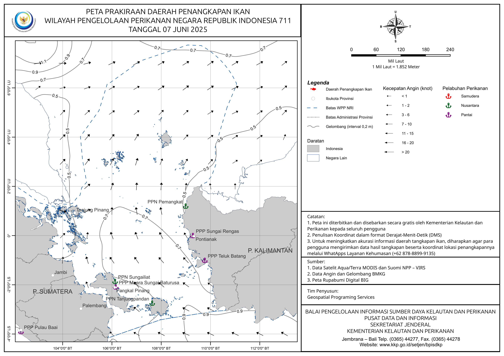

🌊 Sistem Prediksi Overfishing
Monitoring dan prediksi potensi overfishing untuk kelestarian sumber daya kelautan
Tentang Sistem
Sistem Informasi Kelautan ini dirancang untuk membantu memantau dan memprediksi potensi overfishing di perairan Indonesia. Dengan menganalisis data historis jumlah kapal dan hasil tangkapan, sistem ini dapat memberikan prediksi yang akurat untuk mendukung pengelolaan sumber daya kelautan yang berkelanjutan.
Fitur Utama
- 🎯 Prediksi Overfishing: Algoritma machine learning untuk memprediksi potensi overfishing
- 📊 Analisis Tren: Visualisasi tren data historis jumlah kapal dan hasil tangkapan
- 🗺️ Peta Zona Rawan: Identifikasi zona-zona yang berpotensi mengalami overfishing
- 📈 Dashboard Statistik: Monitoring real-time kondisi perikanan
📊 Tren Data Perikanan
📈 Statistik Kunci
🔮 Prediksi Masa Depan
🎯 Rekomendasi Tindakan:
- Regulasi Ketat: Batasi jumlah kapal penangkap ikan dan kuota tangkapan harian
- Zona Konservasi: Tetapkan area terlarang tangkap untuk pemulihan populasi ikan
- Teknologi Berkelanjutan: Promosikan metode penangkapan yang ramah lingkungan
- Monitoring Real-time: Sistem pemantauan aktivitas penangkapan berbasis GPS
- Edukasi Nelayan: Program pelatihan praktik perikanan berkelanjutan
🎯 Prediksi Potensi Overfishing
Input Data Prediksi
Hasil Prediksi
Peta Kepadatan Penangkapan Ikan di Indonesia
Sumber: Peta WPP RI - KKP
🏝️ Wilayah Natuna
Karakteristik Wilayah: Perairan Natuna merupakan wilayah dengan potensi perikanan tinggi dengan berbagai jenis ikan pelagis dan demersal.
Sumber: kkp.go.id
🌊 Teluk Tomini, Laut Halmahera, Laut Maluku

Karakteristik Wilayah: Keanekaragaman hayati laut tinggi dengan hasil perikanan ekonomis seperti tuna dan cakalang.
Sumber: kkp.go.id
⛵ Wilayah Laut Banda

Karakteristik Wilayah: Jalur migrasi ikan tuna, potensi perikanan tangkap besar, khususnya pelagis besar.
Sumber: portal-informasi.kkp.go.id/pdpi
🐟 Wilayah Laut Makassar

Karakteristik Wilayah: Kawasan dengan aktivitas perikanan intensif dan pusat produksi berbagai ikan konsumsi.
Sumber: portal-informasi.kkp.go.id/pdpi
ℹ️ Informasi Penting
📊 Tentang Peta
Peta menunjukkan distribusi aktivitas penangkapan ikan di WPP Indonesia. Penting untuk monitoring dan kebijakan.
🎯 Tujuan
Data ini digunakan untuk pengelolaan berkelanjutan, perencanaan zonasi, dan dasar kebijakan nasional.
📊 Statistik & Tren Overfishing
🚨 Analisis Tren 2018-2022
Temuan Utama: Data menunjukkan tren yang mengkhawatirkan dimana jumlah kapal terus meningkat dari 100 unit (2018) menjadi 210 unit (2022), sementara hasil tangkapan menurun drastis dari 500 ton (2018) menjadi 350 ton (2022).
Tren Overfishing (2018-2022)
📈 Insight Data
Pola Overfishing: Data historis menunjukkan korelasi negatif yang kuat antara peningkatan jumlah kapal dan penurunan hasil tangkapan. Ini mengindikasikan terjadinya overfishing yang berpotensi mengancam keberlanjutan sumber daya ikan.
Rekomendasi:
- 🛑 Pembatasan jumlah kapal di zona-zona kritis
- 📅 Implementasi moratorium penangkapan pada musim tertentu
- 🔍 Monitoring ketat terhadap aktivitas penangkapan
- 🌱 Program restocking dan konservasi